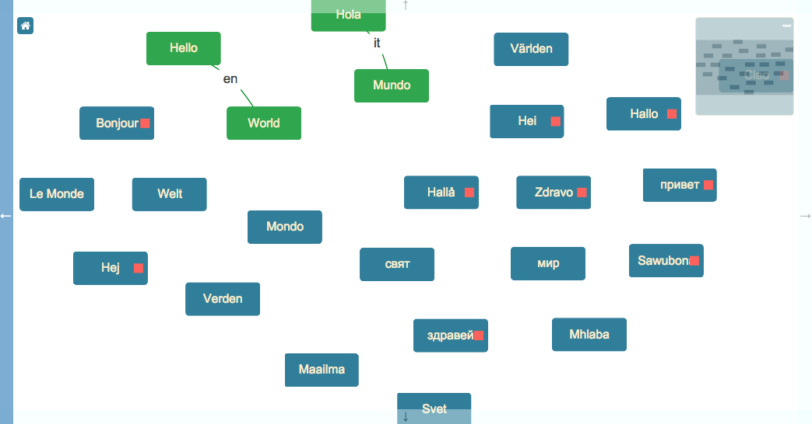

This is a game in which the user must drag links to create Hello World in several languages. This demonstration shows a couple of interesting pieces of functionality: the Toolkit's ability to constrain connections programmatically, and the mechanism used to generate data for an Edge when the user begins dragging. Also, this demonstration makes use of jsPlumb's connected CSS class to automatically highlight connected words.

This page gives you an in-depth look at how the application is put together.
var toolkit = jsPlumbToolkit.newInstance({
beforeConnect:function(source, target) {
return (source.data.type === "hello" && target.data.type === "world" && source.data.l === target.data.l );
},
beforeStartConnect:function(node, edgeType) {
return { lang:node.data.l };
}
});
In the constructor parameters for the Toolkit, we provide a beforeConnect function, which filters connections so that the only edges we can create are from a 'hello' type to a 'world' type. We also provide a beforeStartConnect function, which creates some backing data for the edge that the user will drag. In this case we return an object with the language from the hello node; it appears as an overlay on the edge.
There are two templates used by the app - one for hello Nodes, and one for world Nodes:
<script type="jtk" id="tmplHello">
<div style="left:${x}px;top:${y}px;" class="hello">
<div class="name">${h}</div>
<div class="ep"></div>
<jtk-source port-type="source" filter=".ep"></jtk-source>
</div>
</script>
The hello template is configured as a connection source using the jtk-source element, which is discussed on this page.
<script type="jtk" id="tmplWorld">
<div style="left:${x}px;top:${y}px;" class="world">
<div class="name">${h}</div>
<jtk-target port-type="target"></jtk-target>
</div>
</script>
The world template is configured as a connection target using the jtk-target element.
Data for this application is a list of "Hello" and "World" pairs:
var phrases = [
{ h:"Hello", l:"en", id:"1", type:"hello" },
{ h:"World", l:"en", id:"2", type:"world" },
{ h:"Bonjour", l:"fr", type:"hello" },
{ h:"Le Monde", l:"fr", type:"world" },
{ h:"Hola", l:"es", id:"3", type:"hello" },
{ h:"Mundo", l:"es", id:"4", type:"world" },
{ h:"Hallå", l:"sv", type:"hello" },
{ h:"Världen", l:"sv", type:"world" },
{ h:"Hallo", l:"de", type:"hello" },
{ h:"Welt", l:"de", type:"world" },
{ h:"Hej", l:"dk", type:"hello" },
{ h:"Verden", l:"dk", type:"world" },
{ h:"Ciao", l:"it", type:"hello" },
{ h:"Mondo", l:"it", type:"world" },
{ h:"Hei", l:"fi", type:"hello" },
{ h:"Maailma", l:"fi", type:"world" },
{ h:"Zdravo", l:"si", type:"hello" },
{ h:"Svet", l:"si", type:"world" },
{ h:"привет", l:"ru", type:"hello" },
{ h:"мир", l:"ru", type:"world" },
{ h:"здравей", l:"bg", type:"hello" },
{ h:"свят", l:"bg", type:"world" },
{ h:"Sawubona", l:"zu", type:"hello" },
{ h:"Mhlaba", l:"zu", type:"world" }
];
toolkit.load({
data: {
nodes:phrases,
edges: [
{ source: "1", target: "2", data:{ lang:"en" } },
{ source: "3", target: "4", data:{ lang:"it" } }
]
}
});
The load command passes in the list of phrases as nodes, and then, in the edges section, adds a couple of word pairs so that the user gets the idea of what they are supposed to do.
var renderer = toolkit.render({
container: canvasElement,
view: {
nodes: {
hello: {
template: "tmplHello"
},
world: {
template: "tmplWorld"
}
},
ports:{
"default": {
maxConnections: 1,
uniqueEndpoint: true
}
},
edges:{
"default":{
events:{
click:function(params) {
toolkit.removeEdge(params.edge);
}
},
overlays:[
[ "Label", { label:"${lang}"}]
]
}
}
},
layout: {
type: "Spring"
},
zoomToFit: true,
jsPlumb: {
Endpoint: "Blank",
Connector: "StateMachine",
PaintStyle: { strokeStyle: "green", lineWidth: 3 },
Anchor: "Center"
},
miniview: {
container: miniviewElement
}
});
The meaning of each parameter is as follows:
view Mappings from Node/Edge/Port types to their visual representation/behaviour. We map hello and world Node types to their
respective templates, configure the "default" Port type to have a maximum of one Connection and to share an Endpoint between
all Connections (which may seem redundant given the connection maximum, but the jtk-source element maps to jsPlumb's
makeSource method, which creates, by default, a new Endpoint for each Connection drag. uniqueEndpoint:true suppresses
that default behaviour. We also add a click listener to the default Edge type, which deletes the Edge on click, and we
have a label Overlay that extracts its value from the Edge's backing data.
layout We use a Spring layout in this demonstration.
zoomToFit Instructs the Surface to zoom out so that all Nodes are visible after loading.
jsPlumb Defaults for the Surface's backing instance of jsPlumb.
miniview Provides the ID of the element to turn into a Miniview.
The beforeConnect function shown in the call to newInstance defines a Function that will be called before any Edge is established (either programmatically or with the mouse):
beforeConnect:function(source, target) {
return (source.data.type === "hello" && target.data.type === "world" && source.data.l === target.data.l );
}
The arguments source and target are either Nodes or Ports. If this function returns anything other than true, the Edge will be aborted.
In this example we test three things:
"hello" ?"world" ?As discussed in the rendering section above, this demonstration has a label overlay on each Edge whose value is extracted from the Edge's backing data. With the two Edges loaded at startup, this piece of information is provided in the data object. But for Edges dragged with the mouse, we use a different mechanism - beforeStartConnect parameter on the newInstance call:
beforeStartConnect:function(node, edgeType) {
return { lang:node.data.l };
}
The Toolkit passes in the Node/Port (here we declared the argument as node; we know it is a Node in this application), and the computed type of the Edge. This application uses only the "default" Edge type, so we ignore that argument.
The beforeStartConnect function defined here extracts the language from the Node from which the Edge is being dragged, and returns it in an Object. If this function has returned false, the Edge would have been aborted. Since it returns an Object, the Edge is allowed to be established, and the return value is set as the Edge's backing data.
The puzzle is considered solved when there are no unattached Nodes. We listen for edgeAdded and edgeRemoved events,
and then check the Toolkit to see if there are any unattached Nodes:
var solved = false,
_testSolved = function() {
// filter the data for nodes that are unconnected. If there are no unconnected
// nodes, everything is connected and we have a winner.
solved = (toolkit.filter(function(obj) {
return obj.objectType == "Node" && obj.getAllEdges().length == 0;
}).getNodeCount() == 0);
if(solved) {
alert("You win!");
}
};
// listen for edgeAdded/edgeRemoved events
renderer.bind("edgeAdded", _testSolved);
renderer.bind("edgeRemoved", _testSolved);